拡散する格子
開く ↗正確に並んだ点の格子（＝ひとつの正解）が、一角から溶けて流れに引き伸ばされ、分裂して1→8倍に数を増やしながら闇へ散る。1コマの中に「まだ整った側」と「崩れていく側」が並び、中心の朱の一点は増えた灰色の点に紛れて消える。右下に状態の数と S=k·ln W。
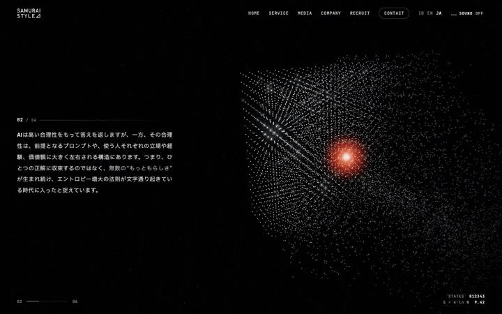
上が「全体の雰囲気」の候補、下が「節ごと」の候補です。画像を押すと実物が開きます（PC は1画面目と全体、右の細い列はスマホ）。文言はすべて今のサイトの原文のままです。
3D・真っ暗の中で。型の違う3案。
正確に並んだ点の格子（＝ひとつの正解）が、一角から溶けて流れに引き伸ばされ、分裂して1→8倍に数を増やしながら闇へ散る。1コマの中に「まだ整った側」と「崩れていく側」が並び、中心の朱の一点は増えた灰色の点に紛れて消える。右下に状態の数と S=k·ln W。

闇に浮かぶ細く整った1本の煙の輪。スクロールで乱流が強まり、輪がほどけ、渦が渦を生んで画面いっぱいへ手に負えなく広がる。輪の中心の朱の一点は煙に呑まれていく。粒でも線でもなく、体積（煙）で見せる型。

継ぎ目のない黒い立方体（＝ひとつの正解）が一角から割れ、塊はさらに小片へ、小片は塵へと、砕けるたびに数を増やして闇へ散る。割れ目の奥に朱の光が一瞬のぞき、やがて紛れる。硬い立体の質感で見せる型。音はオンで割れる数だけ鳴る。

いちばん上が最新。本線には今、初期の案そのものが入っています。
本線の『ノイズが1点に集まり、Signalが光の柱として打ち上がる』はそのまま。打ち上がった柱の先端が上空まで昇り、頭上に広がっていた灰色のノイズの層に届く。届いた所から朱い波紋が層全体へ広がり、通った後の層はかすかに朱を帯びて静まる。カメラは打ち上げを追って見上げる。『見極めたSignalは、周りのノイズにまで届く』。音：集まる間は帯域ノイズが細く高くなっていくうなり → 打ち上げで低い一撃＋上へ抜ける風切り＋短い鐘 → 上空に届いた瞬間、遠い鐘2音と層を渡るきらめき、その後は柱の静かな持続音。クリックで最初から。

本線の骨格はそのままに、集まる前のノイズの質感を変えた案。ノイズは点ではなく、てんでばらばらの向きでチカチカ瞬く短い線。やがて一本ずつ同じ一点の方を向き、瞬きが止まって放射状の流れになって吸い込まれ、1点に収まった瞬間、全部が真上を向いて光の柱として打ち上がる。『向きのないものがノイズ、向きを持ったものがSignal』。音も同じ仕組み：ざらついたノイズの帯域を少しずつ狭め、ぱちぱち音も減って、ひとつの音程になる（ノイズが音として信号に変わる）→ 打ち上げでその音程自体が1オクターブ上へ抜け、一撃と風切りが重なる。クリックで最初から。

本線の『集まる→打ち上がる』の間に一拍の“溜め”を入れた案。集まりきった瞬間、粒は止まり、周りの光も線も引いて、芯だけが小さな点に縮み、一度だけ脈打つ（約1秒）。次の瞬間に打ち上がる：閃光、柱がほぼ一瞬で立ち、残っていたノイズが水平の衝撃の輪で外へ吹き払われる。その後は柱に火の粉が昇り続ける。音：低いうなりが上がり、刻みがだんだん速くなる → 止まった瞬間に全部消えて無音 → 一拍の鼓動 → 打ち上げで深い一撃＋ノイズの破裂＋上へ抜ける風切り＋長い余韻の鐘、その後は柱の和音が静かに残る。クリックで最初から。
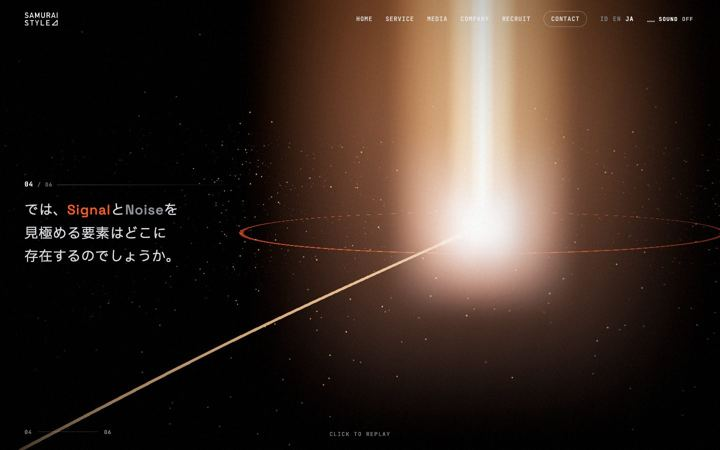
1〜3＝照らす・合わせる・拍、4〜6（追加）＝つながり・見る角度・時間。
真っ暗な空間に無数の破片（ノイズ）。見えるのは光が当たった所だけ。一筋のサーチライトが闇を掃き、照らしては通り過ぎ、最後にひとつだけ朱く応える破片（Signal）で止まる。光そのものが「見極める要素」。PCはマウスで光を少し振れる。


ざわつく波形の列が奥から手前へ流れる。目盛りが左右に探り、1点で合うとノイズが静まり、ずっとそこにあった朱い稜線（Signal）が奥から手前まで立ち上がる。音はラジオの同調（帯域を絞った雑音→澄んだ正弦波）。
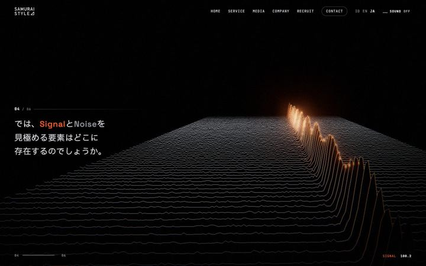


無数の点がでたらめに瞬く空に、ひとつだけ同じ拍で瞬く点がある。観測を重ねるほど、でたらめな瞬きは均されて静まり、同じ拍の一点だけが朱く脈打って残る。右下の波形は拍に合わせて重ねた明るさで、重ねるほど1本の山が立つ（＝再現するものが Signal）。
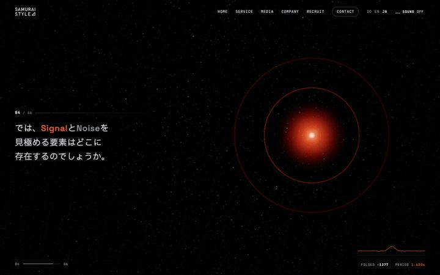


闇に同じ灰色の点が無数に浮かび、どれも同じに見える。スクロールで、ある点から次の点へ朱い線がつながり始め、奥へ一本の筋を描く。どこにもつながらない点は闇に沈む。手がかりは「前後とつながっているか（一貫性）」。

短い灰色の線の破片が無数に散らばり、どこから見てもでたらめ。視点が回り込み、ただ1つの角度に立った瞬間だけ、破片の一部が1本のなめらかな波に重なって朱く灯る。手がかりは「どこに立って見るか（視点・立場）」。音は2つの音のうなりが、そろうと1つになる。


灰色の砂でできた塊が、時間とともに外側からほどけて風に流れ消えていく。最後に残るのは、奥にずっとあった小さな朱い芯だけ。手がかりは「時間が経っても残るか（一時的なノイズ／本質的なシグナル）」。


3D・真っ暗の中で。音が主役の3案（SOUND を ON にして見てください）。
人が積み重なってできた山（約310体）に、大勢（約150体）がよじ登っては引きずり落とされ、叫びながら転げ落ち、下で倒れてはまた登る。頂上の1人だけが光の筋の中の朱をつかんで掲げると、群れはぴたりと止まる（不気味な勝利）。その後、山が沈み、人々が手をつなぐ輪になって中心の朱（笑顔の総量）が育つ。音は合成の人の声：うめきの束・ざわめき・落ちる人の叫びとどよめきと、どさっという音 → 勝った瞬間に全員の声が同じ高さへずり上がる歓声、そのあと低いうなりだけの静けさ → 輪では鈴と明るい和音。中身は本線用の部品 3d/b/sc5.js。


黒い油のような3つの塊が糸を引いて取り分を奪い合う（体積の合計は一定・糸が伸びて切れ、しずくが垂れる）。やがて寄り合って1つに溶け、合計そのものが増え、内側から朱の光が透ける。音はぬめる低音と泡・糸が伸びる「ぎゅー」・切れる「ぷつっ／ねちゃっ」 → 溶け合うと温かい和音と内の光のうなり。

左右の暗がりから伸びた無数の糸が1つの黒い結び目を綱引きする（結び目は大きくならない・糸には粘りのしずく）。糸がほどけて1枚の織物に編まれ、交点ごとに朱が灯り、織物が広がる。音は糸の摩擦の軋みと低い踏ん張り → 糸が織物に収まるたびに弦として鳴り、和音になる。
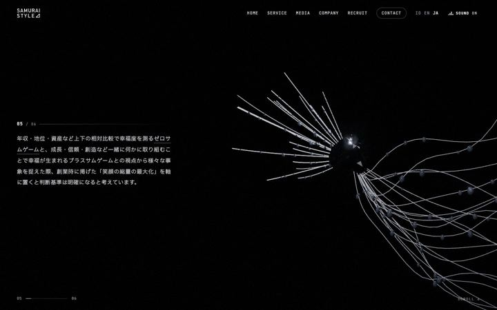


小さな物がそれぞれ勝手に動いている → 集まって1つの大きな物になる、の型違い4案。
暗闇に小さな三角（3つの星を結んだ小さな星座）が無数に浮かび、それぞれ自分の軸で勝手に回り、勝手に瞬く。上から順に1枚ずつ向きをそろえて寄り合い、180枚全部が1つの大きな球の面になる。球はゆっくり1つの向きに回り、瞬きも全体で1つの息になり、中心に朱が灯る。音は瞬くたびに音階に乗らない細い音がばらばらに鳴る → 少しずつ和音の音へ寄り、1枚はまるごとに和音の音が足され、組み上がった数だけ1つの和音が太くなる。朱でサイトのシグナル音。

暗い水面（光の点の面）のあちこちに滴が勝手に落ち、小さな輪を立てては打ち消し合う。滴が少しずつ同じ場所・同じ拍に寄り、重なった小さな輪が1つの大きな輪になる。最後は水面全体が中心からの大きな同心円で呼吸し、中心の上に朱が灯って周りの波頭がかすかに朱を帯びる。音は高さのそろわない「ポッ」がばらばら → 拍の頭にそろい和音の音へ寄る → 拍ごとに低い「ドゥン」と澄んだ鐘1つ。朱でシグナル音。


大きさも形も違う小さな石が、暗闇でそれぞれ勝手に転がり漂う。下の段から1つずつ飛んできて収まり、互いに支え合って1枚の反りのある石垣（扇の勾配）になる。天端に朱が1つ灯り、上の石をかすかに照らす。音は小石の乾いたカチがばらばら → 着地の「ゴトッ」（はじめは高さも強さもばらばら、段が上がるほど低い1つの音へそろう）、1段そろうごとに和音の音が1つ、石垣ができるほど低い和音が太くなる。朱でシグナル音。
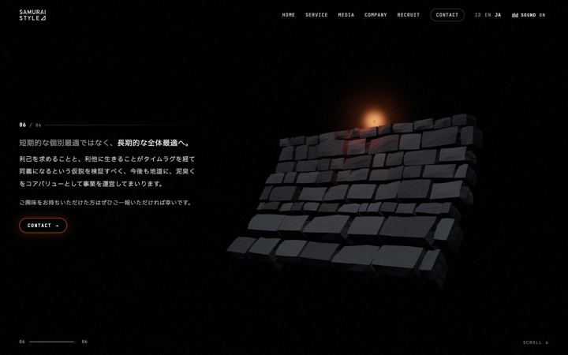
宙に浮く無数の小さな針（砂鉄）が、近くに出ては消える小さな磁石にそれぞれ引かれ、ばらばらの向きでぴくぴく向きを変える（小さな放射がいくつも）。小さな磁石が消え、1つの大きな磁極の場に全部の針が向きをそろえる。一本一本は小さいまま、全部で1つの大きな力線の模様になり、磁極に朱が灯る。音は針が一斉に向く細い金属音（高さばらばら）とさらさらした擦れ → 擦れが静まり、1つの場の唸り（和音）が育ち、そろい切ると澄んだ和音1つ。朱でシグナル音。


3D・真っ暗の中で。型の違う3案。ご一報の文と CONTACT まで入っています。
真っ暗な野で、一人ひとりが額の灯りで自分の足元だけを照らし、ばらばらに見回している。顔が上がり全員が同じ遠くを向くと、短い灯りが1本の長い道になって地平の朱（シグナル）まで届く。音はスイッチのカチッとばらばらの小さな電子音 → 1つの拍にそろい、朱が灯るとサイトのシグナル音。

無数の鳥が、目の前に出ては消える小さな餌へそれぞれ突っ込む（餌が消えると近くの別の餌へ乗り換え）。餌が消えると群れが1つの大きなうねりになって呼吸し、最後は長い帯となって遠い朱へ流れる。音は細かい羽音と鳴き声 → 群れの息（大きく吸って吐く風）と和音、朱でシグナル音。
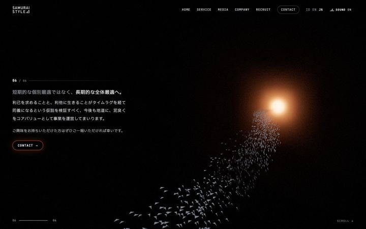
大小の歯車が宙でばらばらに空回りし、引っかかって震え、火花が散る。1つずつ噛み合う位置へ収まり、小さく速い歯車から大きく遅い歯車へ力が渡り、全体がゆっくり1つの時を刻む。大歯車の軸に朱が灯り、長い針が回る。音は歯車ごとに違う高さのカチ（ばらばらの拍）と擦れ → 大歯車の低い「コトン」と鐘。

1が本線に入っている形。S2Aは 3C→戦略→実行・伴走→画面 の一続きの図。
4事業を FEATURES と同じ札（地・1px の線・余白・『01 / 04』）に入れて 2×2 に並べた。上半分が製図の図（実物の画面・映像）、下が文字。表題欄と二重の図面枠、黒と朱の引出線は外した。S2A は 3C（事業理解）→ 戦略（いくつかの道筋から1本を選んで的へ）→ 実行・伴走（一段ずつ上がる階段と、その横を最後まで並んで進む朱の点線）→ 画面（可視化）の一続きの図。線は描き終えたら止まり、動くのは映像だけ。本線 top-v2 に入れた形。


札の作りは候補1と同じ。S2A だけ横長の札（図が左6割・文字が右）にして一段目に置き、HookHack／HookHacker／動画制作を下の段に3つ並べた。S2A の流れの図を大きく見せたい時の形。スマホは候補1と同じ1列。


図だけを MEMBER の写真と同じ枠（1px の線・左上と右下の＋の角印）に入れ、番号・名前・説明は札に入れず地にじかに置いた。2×2、段の間を広めに取る。候補1より軽く、MEMBER との並びが一番そろう。

中身のある箱にだけ朱の印。押すと記事の一覧が出る。記事の割り当ては仮。
箱の右上の角に朱の小札（件数）。かざす／フォーカスで線が2倍になり「→」が出る。押すと右から引き出しが出て、記事・動画のカードが縦に並ぶ（スマホは下から出る面・カードは横長）。図はそのまま見え続けるので、隣の箱へ移りやすい。
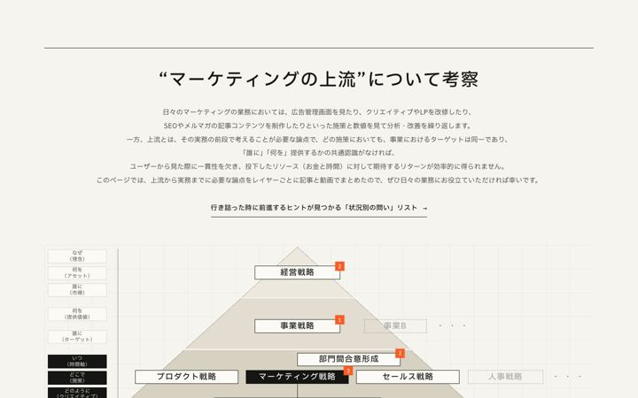
箱の下辺に朱の帯と「＋件数」の垂れ札。押すと＋が－になり、図の下に一覧が開いてカードが3列で並ぶ（アコーディオン）。スマホは押した段のすぐ下に開く。面を重ねないので、ページの流れの中で読める。
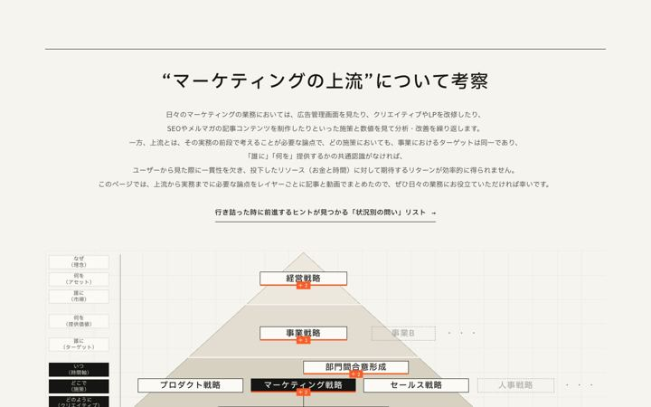
設計図の部品番号の風船（朱の丸い番号＋引き出し線）を、中身のある箱だけに付けた。押すと画面中央に大きな面が重なり、大きなサムネイルで2〜3列。スマホは風船を箱の右端に収め、面はほぼ全画面。
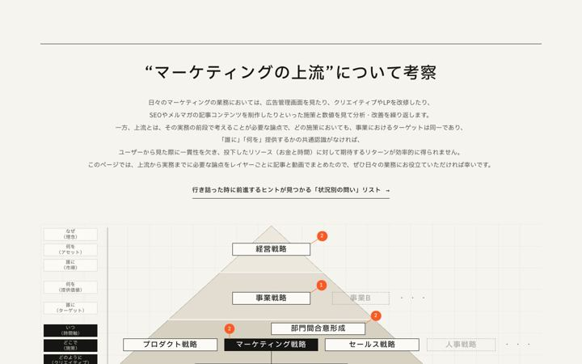
紙のトーン・文言とフォームは原文のまま。SOUND を ON にして入力してみてください。
左の板を、紙の上を門形のアームが動くプリンター（プロッター）にした。入力した文字を、ヘッドが縦の細線で1列ずつ往復しながら印字する（印字中はヘッドが細かく震える）。入力中の項目へヘッドが移動し、行が変わると紙が1行ぶん送られる。6つそろうと紙の四隅にトンボを朱で入れ、送信で紙が上へ排出される。本線 top-v2 と 3D版の CONTACT に採用（11/24）。音の狙い：印刷している音。ヘッドの移動はキャリッジのモーター音、印字中はドットインパクトの細かい連打と本体のうなり（字の詰まり具合で密度が変わる）、行が変わると紙送りの「ガコッ」、ヘッドの打ち下ろし・上げは小さなカチッ、1項目そろうと小さな「ピッ」、トンボがそろうと準備完了の2音、送信はローラーの歯車音→紙が抜ける「シュッ」→最後のガコッ、足りない時はエラーの2回ビープ。

左の板を、方眼の記録紙が右から左へ流れ続ける6チャンネルの記録計（地震計・ポリグラフの型）にした。1項目＝1本のペンで、その項目に1文字打つたびにペンが振れて減衰する波を描く。入力中のペンは朱、そろった項目は線が太い墨になりイベント印が打たれる。6つそろうと6本が和音の周波数比のままそろって振れ（目で見る和音）、送信で紙が早送りされる。音の狙い：書くこと自体が演奏になる。6本のペンに D の和音の6音（D3・A3・D4・F#4・A4・E5）を割り当て、1文字ごとにその音を爪弾く（左右の位置もペンごと）。そろった項目の音は小さく鳴り続け、書き進めるほど和音が積み上がる。6つで鐘、送信は6音の上昇アルペジオ。
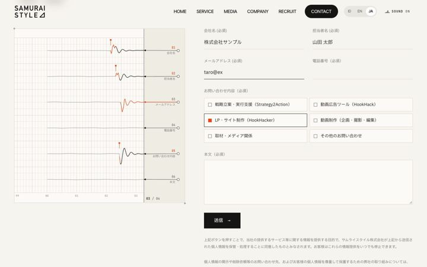
パネルを置かず、節全体に画面の端から端まで届く十字の細線（CADのカーソル）を重ねた。マウスについて来て、カーソルの周りだけ方眼の点が浮かぶ。項目を選ぶとその欄の始点へ吸い付き（スナップ）、打つほど文字の終わりを追って下線を墨で引く。そろった欄には朱のスナップ印と寸法線（文字数）が残る。左の段は座標と吸い付いた先の項目名を大きな等幅数字で出す読み取り表示。6つそろうとカーソルが送信ボタンを点線の選択枠で囲み、押すと枠が広がる。音の狙い：精密な道具の手応え。吸い付く瞬間に澄んだ短い音（項目ごとに音程が上がる）、移動中はかすかなサーボのうなり、マウスが方眼の線を越えるたびにごく小さな手応え、打鍵は乾いた刻み、寸法線は定規を引く短い上昇音、そろうと高い2音、送信は和音。
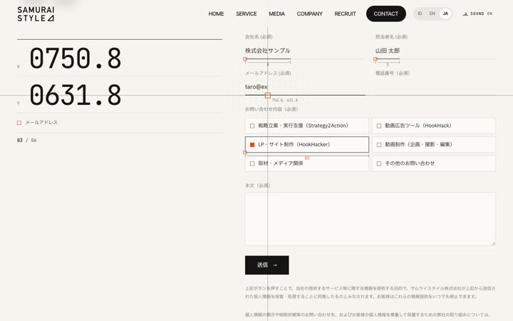
見出しの CONTACT US を、文字そのものの設計図として左に置いた（伸びる見出しの代わり）。最初は基準線・字高線・文字の枠・骨組みの細線・コンパスの円だけ。項目が埋まるほど、太い墨のペンが骨組みをなぞって1文字ずつ清書する（丸い字はコンパスの腕が回る）。6つそろうと補助線が消えて完成した字だけが残り、US の下に朱の線が引かれる。送信を押すと上から下へ焼き付けの光が走る。音の狙い：製図道具の音で文字が出来上がっていく。直線は定規に沿った低めのこすれ、丸はコンパスの高めのこすれ（左右の位置も字の場所に合わせて動く）、1文字書き上がるごとに木を打つ小さな音（D の音階で上がる）、項目を選ぶと鉛筆で紙を叩く音、6つで補助線が消える息の音と高い2音、送信は掃く音と和音。